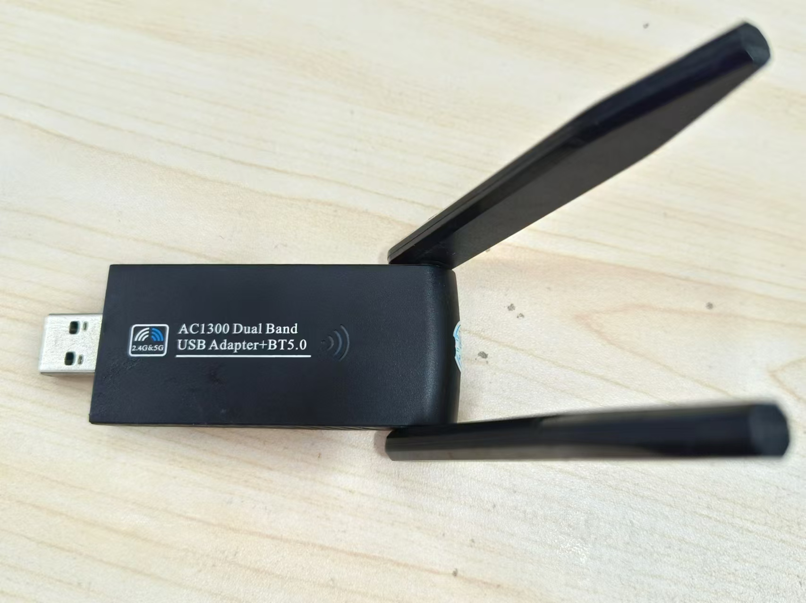

ubuntu 20.04.6 install tp link a1300 usb wifi adaptor driver
Table of Contents
Ubuntu 20.04.6 安装 TP-Link AC1300 USB 无线网卡驱动

确认 Ubuntu 系统信息
lsb_release -a
$ lsb_release -a
No LSB modules are available.
Distributor ID: Ubuntu
Description: Ubuntu 20.04.6 LTS
Release: 20.04
Codename: focal
uname -a
$ uname -a
Linux kkg12333-HP-ProBook-440-14-inch-G10-Notebook-PC 5.15.0-119-generic #129~20.04.1-Ubuntu SMP Wed Aug 7 13:07:13 UTC 2024 x86_64 x86_64 x86_64 GNU/Linux
安装依赖工具
## see uname -a
sudo apt-get install git linux-headers-5.15.0-119-generic build-essential dkms
下载驱动源码
git clone https://github.com/cilynx/rtl88x2bu.git
驱动安装步骤
cd rtl88x2bu
export VER=$(sed -n 's/\PACKAGE_VERSION="\(.*\)"/\1/p' dkms.conf)
echo ${VER}
sudo rsync -rvhP ./ /usr/src/rtl88x2bu-${VER}
sudo dkms add -m rtl88x2bu -v ${VER}
sudo dkms build -m rtl88x2bu -v ${VER}
sudo dkms install -m rtl88x2bu -v ${VER}
sudo modprobe 88x2bu
各个安装阶段的日志供参考
VER
$ echo ${VER}
5.8.7.1
rsync
$ sudo rsync -rvhP ./ /usr/src/rtl88x2bu-${VER}
sending incremental file list
created directory /usr/src/rtl88x2bu-5.8.7.1
./
.gitignore
430 100% 0.00kB/s 0:00:00 (xfr#1, to-chk=680/682)
Kconfig
130 100% 126.95kB/s 0:00:00 (xfr#2, to-chk=679/682)
LICENSE
18.09K 100% 17.25MB/s 0:00:00 (xfr#3, to-chk=678/682)
Makefile
72.99K 100% 69.60MB/s 0:00:00 (xfr#4, to-chk=677/682)
README.md
8.94K 100% 8.53MB/s 0:00:00 (xfr#5, to-chk=676/682)
clean
90 100% 87.89kB/s 0:00:00 (xfr#6, to-chk=675/682)
deploy.sh
731 100% 713.87kB/s 0:00:00 (xfr#7, to-chk=674/682)
dkms.conf
276 100% 269.53kB/s 0:00:00 (xfr#8, to-chk=673/682)
halmac.mk
2.00K 100% 1.91MB/s 0:00:00 (xfr#9, to-chk=672/682)
ifcfg-wlan0
51 100% 49.80kB/s 0:00:00 (xfr#10, to-chk=671/682)
rtl8822b.mk
1.92K 100% 1.83MB/s 0:00:00 (xfr#11, to-chk=670/682)
runwpa
415 100% 405.27kB/s 0:00:00 (xfr#12, to-chk=669/682)
wlan0dhcp
294 100% 287.11kB/s 0:00:00 (xfr#13, to-chk=668/682)
.github/
.github/workflows/
.github/workflows/build.yml
1.99K 100% 969.24kB/s 0:00:00 (xfr#14, to-chk=660/682)
core/
core/rtw_ap.c
156.98K 100% 49.90MB/s 0:00:00 (xfr#15, to-chk=659/682)
core/rtw_beamforming.c
58.71K 100% 14.00MB/s 0:00:00 (xfr#16, to-chk=658/682)
core/rtw_br_ext.c
46.47K 100% 11.08MB/s 0:00:00 (xfr#17, to-chk=657/682)
core/rtw_bt_mp.c
50.55K 100% 12.05MB/s 0:00:00 (xfr#18, to-chk=656/682)
core/rtw_btcoex.c
50.67K 100% 9.66MB/s 0:00:00 (xfr#19, to-chk=655/682)
core/rtw_btcoex_wifionly.c
1.39K 100% 271.29kB/s 0:00:00 (xfr#20, to-chk=654/682)
core/rtw_chplan.c
62.60K 100% 11.94MB/s 0:00:00 (xfr#21, to-chk=653/682)
core/rtw_chplan.h
2.97K 100% 580.86kB/s 0:00:00 (xfr#22, to-chk=652/682)
core/rtw_cmd.c
157.90K 100% 25.10MB/s 0:00:00 (xfr#23, to-chk=651/682)
core/rtw_debug.c
213.16K 100% 29.04MB/s 0:00:00 (xfr#24, to-chk=650/682)
core/rtw_eeprom.c
7.07K 100% 985.77kB/s 0:00:00 (xfr#25, to-chk=649/682)
core/rtw_ieee80211.c
75.70K 100% 9.02MB/s 0:00:00 (xfr#26, to-chk=648/682)
core/rtw_io.c
27.36K 100% 3.26MB/s 0:00:00 (xfr#27, to-chk=647/682)
core/rtw_ioctl_query.c
710 100% 86.67kB/s 0:00:00 (xfr#28, to-chk=646/682)
core/rtw_ioctl_set.c
23.36K 100% 2.79MB/s 0:00:00 (xfr#29, to-chk=645/682)
core/rtw_iol.c
10.98K 100% 1.31MB/s 0:00:00 (xfr#30, to-chk=644/682)
core/rtw_mem.c
3.42K 100% 417.72kB/s 0:00:00 (xfr#31, to-chk=643/682)
core/rtw_mi.c
42.32K 100% 5.04MB/s 0:00:00 (xfr#32, to-chk=642/682)
core/rtw_mlme.c
167.41K 100% 17.74MB/s 0:00:00 (xfr#33, to-chk=641/682)
core/rtw_mlme_ext.c
496.20K 100% 39.43MB/s 0:00:00 (xfr#34, to-chk=640/682)
core/rtw_mp.c
106.99K 100% 8.50MB/s 0:00:00 (xfr#35, to-chk=639/682)
core/rtw_odm.c
16.91K 100% 1.34MB/s 0:00:00 (xfr#36, to-chk=638/682)
core/rtw_p2p.c
164.96K 100% 12.10MB/s 0:00:00 (xfr#37, to-chk=637/682)
core/rtw_pwrctrl.c
79.81K 100% 5.44MB/s 0:00:00 (xfr#38, to-chk=636/682)
core/rtw_recv.c
142.57K 100% 9.71MB/s 0:00:00 (xfr#39, to-chk=635/682)
core/rtw_rf.c
39.87K 100% 2.53MB/s 0:00:00 (xfr#40, to-chk=634/682)
core/rtw_rm.c
58.98K 100% 3.75MB/s 0:00:00 (xfr#41, to-chk=633/682)
core/rtw_rm_fsm.c
23.96K 100% 1.52MB/s 0:00:00 (xfr#42, to-chk=632/682)
core/rtw_rm_util.c
9.39K 100% 611.59kB/s 0:00:00 (xfr#43, to-chk=631/682)
core/rtw_rson.c
18.26K 100% 1.16MB/s 0:00:00 (xfr#44, to-chk=630/682)
core/rtw_sdio.c
4.28K 100% 278.52kB/s 0:00:00 (xfr#45, to-chk=629/682)
core/rtw_security.c
95.66K 100% 5.70MB/s 0:00:00 (xfr#46, to-chk=628/682)
core/rtw_sreset.c
9.40K 100% 573.91kB/s 0:00:00 (xfr#47, to-chk=627/682)
core/rtw_sta_mgt.c
36.96K 100% 2.20MB/s 0:00:00 (xfr#48, to-chk=626/682)
core/rtw_tdls.c
109.44K 100% 6.14MB/s 0:00:00 (xfr#49, to-chk=625/682)
core/rtw_vht.c
38.23K 100% 2.14MB/s 0:00:00 (xfr#50, to-chk=624/682)
core/rtw_wapi.c
42.74K 100% 2.40MB/s 0:00:00 (xfr#51, to-chk=623/682)
core/rtw_wapi_sms4.c
27.65K 100% 1.55MB/s 0:00:00 (xfr#52, to-chk=622/682)
core/rtw_wlan_util.c
131.89K 100% 6.99MB/s 0:00:00 (xfr#53, to-chk=621/682)
core/rtw_xmit.c
161.66K 100% 8.57MB/s 0:00:00 (xfr#54, to-chk=620/682)
core/efuse/
core/efuse/rtw_efuse.c
92.04K 100% 4.62MB/s 0:00:00 (xfr#55, to-chk=617/682)
core/mesh/
core/mesh/rtw_mesh.c
114.13K 100% 5.44MB/s 0:00:00 (xfr#56, to-chk=616/682)
core/mesh/rtw_mesh.h
20.47K 100% 999.37kB/s 0:00:00 (xfr#57, to-chk=615/682)
core/mesh/rtw_mesh_hwmp.c
49.27K 100% 2.35MB/s 0:00:00 (xfr#58, to-chk=614/682)
core/mesh/rtw_mesh_hwmp.h
2.15K 100% 105.22kB/s 0:00:00 (xfr#59, to-chk=613/682)
core/mesh/rtw_mesh_pathtbl.c
33.22K 100% 1.51MB/s 0:00:00 (xfr#60, to-chk=612/682)
core/mesh/rtw_mesh_pathtbl.h
7.61K 100% 353.98kB/s 0:00:00 (xfr#61, to-chk=611/682)
hal/
hal/HalPwrSeqCmd.c
5.52K 100% 256.65kB/s 0:00:00 (xfr#62, to-chk=610/682)
hal/hal_btcoex.c
177.62K 100% 7.70MB/s 0:00:00 (xfr#63, to-chk=609/682)
hal/hal_btcoex_wifionly.c
7.65K 100% 339.40kB/s 0:00:00 (xfr#64, to-chk=608/682)
hal/hal_com.c
446.84K 100% 17.76MB/s 0:00:00 (xfr#65, to-chk=607/682)
hal/hal_com_c2h.h
4.47K 100% 181.80kB/s 0:00:00 (xfr#66, to-chk=606/682)
hal/hal_com_phycfg.c
178.02K 100% 6.79MB/s 0:00:00 (xfr#67, to-chk=605/682)
hal/hal_dm.c
55.97K 100% 2.14MB/s 0:00:00 (xfr#68, to-chk=604/682)
hal/hal_dm.h
3.66K 100% 143.05kB/s 0:00:00 (xfr#69, to-chk=603/682)
hal/hal_dm_acs.c
17.45K 100% 681.72kB/s 0:00:00 (xfr#70, to-chk=602/682)
hal/hal_dm_acs.h
5.50K 100% 215.04kB/s 0:00:00 (xfr#71, to-chk=601/682)
hal/hal_halmac.c
131.59K 100% 5.02MB/s 0:00:00 (xfr#72, to-chk=600/682)
hal/hal_halmac.h
10.77K 100% 420.62kB/s 0:00:00 (xfr#73, to-chk=599/682)
hal/hal_intf.c
53.64K 100% 2.05MB/s 0:00:00 (xfr#74, to-chk=598/682)
hal/hal_mcc.c
123.79K 100% 4.54MB/s 0:00:00 (xfr#75, to-chk=597/682)
hal/hal_mp.c
93.97K 100% 3.45MB/s 0:00:00 (xfr#76, to-chk=596/682)
hal/hal_phy.c
6.37K 100% 239.15kB/s 0:00:00 (xfr#77, to-chk=595/682)
hal/btc/
hal/btc/btc_basic_types.h
1.25K 100% 46.84kB/s 0:00:00 (xfr#78, to-chk=587/682)
hal/btc/halbtc8822b1ant.c
171.65K 100% 6.30MB/s 0:00:00 (xfr#79, to-chk=586/682)
hal/btc/halbtc8822b1ant.h
14.61K 100% 548.90kB/s 0:00:00 (xfr#80, to-chk=585/682)
hal/btc/halbtc8822b2ant.c
171.09K 100% 6.04MB/s 0:00:00 (xfr#81, to-chk=584/682)
hal/btc/halbtc8822b2ant.h
14.62K 100% 528.90kB/s 0:00:00 (xfr#82, to-chk=583/682)
hal/btc/halbtc8822bwifionly.c
2.19K 100% 79.28kB/s 0:00:00 (xfr#83, to-chk=582/682)
hal/btc/halbtc8822bwifionly.h
1.23K 100% 44.60kB/s 0:00:00 (xfr#84, to-chk=581/682)
hal/btc/halbtcoutsrc.h
48.32K 100% 1.71MB/s 0:00:00 (xfr#85, to-chk=580/682)
hal/btc/mp_precomp.h
3.21K 100% 116.25kB/s 0:00:00 (xfr#86, to-chk=579/682)
hal/efuse/
hal/efuse/efuse_mask.h
4.32K 100% 156.29kB/s 0:00:00 (xfr#87, to-chk=578/682)
hal/efuse/rtl8822b/
hal/efuse/rtl8822b/HalEfuseMask8822B_PCIE.c
1.87K 100% 67.67kB/s 0:00:00 (xfr#88, to-chk=576/682)
hal/efuse/rtl8822b/HalEfuseMask8822B_PCIE.h
1.01K 100% 36.64kB/s 0:00:00 (xfr#89, to-chk=575/682)
hal/efuse/rtl8822b/HalEfuseMask8822B_SDIO.c
1.82K 100% 65.94kB/s 0:00:00 (xfr#90, to-chk=574/682)
hal/efuse/rtl8822b/HalEfuseMask8822B_SDIO.h
1.01K 100% 36.68kB/s 0:00:00 (xfr#91, to-chk=573/682)
hal/efuse/rtl8822b/HalEfuseMask8822B_USB.c
1.86K 100% 67.24kB/s 0:00:00 (xfr#92, to-chk=572/682)
hal/efuse/rtl8822b/HalEfuseMask8822B_USB.h
1.01K 100% 36.53kB/s 0:00:00 (xfr#93, to-chk=571/682)
hal/hal_hci/
hal/hal_hci/hal_usb.c
13.36K 100% 483.15kB/s 0:00:00 (xfr#94, to-chk=570/682)
hal/halmac/
hal/halmac/halmac_2_platform.h
2.86K 100% 103.55kB/s 0:00:00 (xfr#95, to-chk=569/682)
hal/halmac/halmac_api.c
18.54K 100% 670.57kB/s 0:00:00 (xfr#96, to-chk=568/682)
hal/halmac/halmac_api.h
3.44K 100% 124.42kB/s 0:00:00 (xfr#97, to-chk=567/682)
hal/halmac/halmac_bit2.h
2.86M 100% 82.75MB/s 0:00:00 (xfr#98, to-chk=566/682)
hal/halmac/halmac_bit_8197f.h
920.02K 100% 24.37MB/s 0:00:00 (xfr#99, to-chk=565/682)
hal/halmac/halmac_bit_8812f.h
1.14M 100% 27.87MB/s 0:00:00 (xfr#100, to-chk=564/682)
hal/halmac/halmac_bit_8814b.h
1.36M 100% 30.80MB/s 0:00:00 (xfr#101, to-chk=563/682)
hal/halmac/halmac_bit_8821c.h
1.00M 100% 21.76MB/s 0:00:00 (xfr#102, to-chk=562/682)
hal/halmac/halmac_bit_8822b.h
951.76K 100% 20.17MB/s 0:00:00 (xfr#103, to-chk=561/682)
hal/halmac/halmac_bit_8822c.h
1.13M 100% 22.92MB/s 0:00:00 (xfr#104, to-chk=560/682)
hal/halmac/halmac_dbg.c
4.50K 100% 93.42kB/s 0:00:00 (xfr#105, to-chk=559/682)
hal/halmac/halmac_dbg.h
862 100% 17.91kB/s 0:00:00 (xfr#106, to-chk=558/682)
hal/halmac/halmac_fw_info.h
5.07K 100% 105.26kB/s 0:00:00 (xfr#107, to-chk=557/682)
hal/halmac/halmac_fw_offload_c2h_ap.h
43.62K 100% 887.47kB/s 0:00:00 (xfr#108, to-chk=556/682)
hal/halmac/halmac_fw_offload_c2h_nic.h
31.04K 100% 631.43kB/s 0:00:00 (xfr#109, to-chk=555/682)
hal/halmac/halmac_fw_offload_h2c_ap.h
76.42K 100% 1.52MB/s 0:00:00 (xfr#110, to-chk=554/682)
hal/halmac/halmac_fw_offload_h2c_nic.h
52.44K 100% 1.04MB/s 0:00:00 (xfr#111, to-chk=553/682)
hal/halmac/halmac_gpio_cmd.h
3.00K 100% 61.10kB/s 0:00:00 (xfr#112, to-chk=552/682)
hal/halmac/halmac_h2c_extra_info_ap.h
14.64K 100% 297.93kB/s 0:00:00 (xfr#113, to-chk=551/682)
hal/halmac/halmac_h2c_extra_info_nic.h
10.31K 100% 209.68kB/s 0:00:00 (xfr#114, to-chk=550/682)
hal/halmac/halmac_hw_cfg.h
3.86K 100% 78.61kB/s 0:00:00 (xfr#115, to-chk=549/682)
hal/halmac/halmac_intf_phy_cmd.h
1.43K 100% 29.05kB/s 0:00:00 (xfr#116, to-chk=548/682)
hal/halmac/halmac_original_c2h_ap.h
44.00K 100% 895.20kB/s 0:00:00 (xfr#117, to-chk=547/682)
hal/halmac/halmac_original_c2h_nic.h
29.35K 100% 597.19kB/s 0:00:00 (xfr#118, to-chk=546/682)
hal/halmac/halmac_original_h2c_ap.h
105.41K 100% 2.09MB/s 0:00:00 (xfr#119, to-chk=545/682)
hal/halmac/halmac_original_h2c_nic.h
71.53K 100% 1.39MB/s 0:00:00 (xfr#120, to-chk=544/682)
hal/halmac/halmac_pcie_reg.h
1.76K 100% 35.04kB/s 0:00:00 (xfr#121, to-chk=543/682)
hal/halmac/halmac_pwr_seq_cmd.h
2.80K 100% 55.84kB/s 0:00:00 (xfr#122, to-chk=542/682)
hal/halmac/halmac_reg2.h
225.09K 100% 4.38MB/s 0:00:00 (xfr#123, to-chk=541/682)
hal/halmac/halmac_reg_8197f.h
26.70K 100% 532.19kB/s 0:00:00 (xfr#124, to-chk=540/682)
hal/halmac/halmac_reg_8812f.h
34.24K 100% 682.34kB/s 0:00:00 (xfr#125, to-chk=539/682)
hal/halmac/halmac_reg_8814b.h
42.06K 100% 838.21kB/s 0:00:00 (xfr#126, to-chk=538/682)
hal/halmac/halmac_reg_8821c.h
30.90K 100% 615.75kB/s 0:00:00 (xfr#127, to-chk=537/682)
hal/halmac/halmac_reg_8822b.h
27.98K 100% 557.64kB/s 0:00:00 (xfr#128, to-chk=536/682)
hal/halmac/halmac_reg_8822c.h
33.95K 100% 663.07kB/s 0:00:00 (xfr#129, to-chk=535/682)
hal/halmac/halmac_rx_bd_nic.h
1.60K 100% 31.17kB/s 0:00:00 (xfr#130, to-chk=534/682)
hal/halmac/halmac_rx_desc_ap.h
25.52K 100% 498.48kB/s 0:00:00 (xfr#131, to-chk=533/682)
hal/halmac/halmac_rx_desc_chip.h
43.01K 100% 840.10kB/s 0:00:00 (xfr#132, to-chk=532/682)
hal/halmac/halmac_rx_desc_nic.h
17.85K 100% 348.65kB/s 0:00:00 (xfr#133, to-chk=531/682)
hal/halmac/halmac_sdio_reg.h
1.95K 100% 38.01kB/s 0:00:00 (xfr#134, to-chk=530/682)
hal/halmac/halmac_state_machine.h
4.34K 100% 84.84kB/s 0:00:00 (xfr#135, to-chk=529/682)
hal/halmac/halmac_tx_bd_nic.h
4.64K 100% 90.61kB/s 0:00:00 (xfr#136, to-chk=528/682)
hal/halmac/halmac_tx_desc_ap.h
112.81K 100% 2.15MB/s 0:00:00 (xfr#137, to-chk=527/682)
hal/halmac/halmac_tx_desc_buffer_ap.h
65.44K 100% 1.25MB/s 0:00:00 (xfr#138, to-chk=526/682)
hal/halmac/halmac_tx_desc_buffer_chip.h
28.72K 100% 560.86kB/s 0:00:00 (xfr#139, to-chk=525/682)
hal/halmac/halmac_tx_desc_buffer_nic.h
28.74K 100% 561.35kB/s 0:00:00 (xfr#140, to-chk=524/682)
hal/halmac/halmac_tx_desc_chip.h
201.65K 100% 3.77MB/s 0:00:00 (xfr#141, to-chk=523/682)
hal/halmac/halmac_tx_desc_ie_ap.h
66.78K 100% 1.25MB/s 0:00:00 (xfr#142, to-chk=522/682)
hal/halmac/halmac_tx_desc_ie_chip.h
26.56K 100% 508.50kB/s 0:00:00 (xfr#143, to-chk=521/682)
hal/halmac/halmac_tx_desc_ie_nic.h
28.46K 100% 545.00kB/s 0:00:00 (xfr#144, to-chk=520/682)
hal/halmac/halmac_tx_desc_nic.h
52.71K 100% 1009.31kB/s 0:00:00 (xfr#145, to-chk=519/682)
hal/halmac/halmac_type.h
79.74K 100% 1.49MB/s 0:00:00 (xfr#146, to-chk=518/682)
hal/halmac/halmac_usb_reg.h
771 100% 14.76kB/s 0:00:00 (xfr#147, to-chk=517/682)
hal/halmac/halmac_88xx/
hal/halmac/halmac_88xx/halmac_88xx_cfg.h
1.38K 100% 26.37kB/s 0:00:00 (xfr#148, to-chk=515/682)
hal/halmac/halmac_88xx/halmac_bb_rf_88xx.c
11.61K 100% 222.35kB/s 0:00:00 (xfr#149, to-chk=514/682)
hal/halmac/halmac_88xx/halmac_bb_rf_88xx.h
1.89K 100% 36.21kB/s 0:00:00 (xfr#150, to-chk=513/682)
hal/halmac/halmac_88xx/halmac_cfg_wmac_88xx.c
30.50K 100% 583.97kB/s 0:00:00 (xfr#151, to-chk=512/682)
hal/halmac/halmac_88xx/halmac_cfg_wmac_88xx.h
4.05K 100% 77.63kB/s 0:00:00 (xfr#152, to-chk=511/682)
hal/halmac/halmac_88xx/halmac_common_88xx.c
95.66K 100% 1.75MB/s 0:00:00 (xfr#153, to-chk=510/682)
hal/halmac/halmac_88xx/halmac_common_88xx.h
5.22K 100% 97.96kB/s 0:00:00 (xfr#154, to-chk=509/682)
hal/halmac/halmac_88xx/halmac_efuse_88xx.c
59.19K 100% 1.09MB/s 0:00:00 (xfr#155, to-chk=508/682)
hal/halmac/halmac_88xx/halmac_efuse_88xx.h
4.14K 100% 77.71kB/s 0:00:00 (xfr#156, to-chk=507/682)
hal/halmac/halmac_88xx/halmac_flash_88xx.c
9.26K 100% 173.87kB/s 0:00:00 (xfr#157, to-chk=506/682)
hal/halmac/halmac_88xx/halmac_flash_88xx.h
1.29K 100% 24.26kB/s 0:00:00 (xfr#158, to-chk=505/682)
hal/halmac/halmac_88xx/halmac_fw_88xx.c
32.93K 100% 618.35kB/s 0:00:00 (xfr#159, to-chk=504/682)
hal/halmac/halmac_88xx/halmac_fw_88xx.h
2.02K 100% 38.01kB/s 0:00:00 (xfr#160, to-chk=503/682)
hal/halmac/halmac_88xx/halmac_gpio_88xx.c
6.63K 100% 124.53kB/s 0:00:00 (xfr#161, to-chk=502/682)
hal/halmac/halmac_88xx/halmac_gpio_88xx.h
1.63K 100% 30.65kB/s 0:00:00 (xfr#162, to-chk=501/682)
hal/halmac/halmac_88xx/halmac_init_88xx.c
29.51K 100% 554.22kB/s 0:00:00 (xfr#163, to-chk=500/682)
hal/halmac/halmac_88xx/halmac_init_88xx.h
1.97K 100% 37.00kB/s 0:00:00 (xfr#164, to-chk=499/682)
hal/halmac/halmac_88xx/halmac_mimo_88xx.c
26.05K 100% 489.13kB/s 0:00:00 (xfr#165, to-chk=498/682)
hal/halmac/halmac_88xx/halmac_mimo_88xx.h
2.71K 100% 50.95kB/s 0:00:00 (xfr#166, to-chk=497/682)
hal/halmac/halmac_88xx/halmac_usb_88xx.c
13.89K 100% 260.87kB/s 0:00:00 (xfr#167, to-chk=496/682)
hal/halmac/halmac_88xx/halmac_usb_88xx.h
2.72K 100% 51.03kB/s 0:00:00 (xfr#168, to-chk=495/682)
hal/halmac/halmac_88xx/halmac_8822b/
hal/halmac/halmac_88xx/halmac_8822b/halmac_8822b_cfg.h
2.65K 100% 49.67kB/s 0:00:00 (xfr#169, to-chk=493/682)
hal/halmac/halmac_88xx/halmac_8822b/halmac_cfg_wmac_8822b.c
3.98K 100% 74.74kB/s 0:00:00 (xfr#170, to-chk=492/682)
hal/halmac/halmac_88xx/halmac_8822b/halmac_cfg_wmac_8822b.h
1.28K 100% 23.96kB/s 0:00:00 (xfr#171, to-chk=491/682)
hal/halmac/halmac_88xx/halmac_8822b/halmac_common_8822b.c
4.61K 100% 86.56kB/s 0:00:00 (xfr#172, to-chk=490/682)
hal/halmac/halmac_88xx/halmac_8822b/halmac_common_8822b.h
1.21K 100% 22.65kB/s 0:00:00 (xfr#173, to-chk=489/682)
hal/halmac/halmac_88xx/halmac_8822b/halmac_gpio_8822b.c
30.92K 100% 580.60kB/s 0:00:00 (xfr#174, to-chk=488/682)
hal/halmac/halmac_88xx/halmac_8822b/halmac_gpio_8822b.h
1.27K 100% 23.94kB/s 0:00:00 (xfr#175, to-chk=487/682)
hal/halmac/halmac_88xx/halmac_8822b/halmac_init_8822b.c
34.06K 100% 639.67kB/s 0:00:00 (xfr#176, to-chk=486/682)
hal/halmac/halmac_88xx/halmac_8822b/halmac_init_8822b.h
1.51K 100% 28.38kB/s 0:00:00 (xfr#177, to-chk=485/682)
hal/halmac/halmac_88xx/halmac_8822b/halmac_phy_8822b.c
4.39K 100% 82.44kB/s 0:00:00 (xfr#178, to-chk=484/682)
hal/halmac/halmac_88xx/halmac_8822b/halmac_pwr_seq_8822b.c
24.52K 100% 460.51kB/s 0:00:00 (xfr#179, to-chk=483/682)
hal/halmac/halmac_88xx/halmac_8822b/halmac_pwr_seq_8822b.h
1.43K 100% 26.93kB/s 0:00:00 (xfr#180, to-chk=482/682)
hal/halmac/halmac_88xx/halmac_8822b/halmac_usb_8822b.c
4.66K 100% 87.48kB/s 0:00:00 (xfr#181, to-chk=481/682)
hal/halmac/halmac_88xx/halmac_8822b/halmac_usb_8822b.h
1.43K 100% 26.80kB/s 0:00:00 (xfr#182, to-chk=480/682)
hal/led/
hal/led/hal_led.c
6.53K 100% 120.34kB/s 0:00:00 (xfr#183, to-chk=479/682)
hal/led/hal_usb_led.c
112.28K 100% 2.02MB/s 0:00:00 (xfr#184, to-chk=478/682)
hal/phydm/
hal/phydm/ap_makefile.mk
7.04K 100% 129.66kB/s 0:00:00 (xfr#185, to-chk=477/682)
hal/phydm/halhwimg.h
4.12K 100% 75.95kB/s 0:00:00 (xfr#186, to-chk=476/682)
hal/phydm/mp_precomp.h
968 100% 17.84kB/s 0:00:00 (xfr#187, to-chk=475/682)
hal/phydm/phydm.c
86.98K 100% 1.57MB/s 0:00:00 (xfr#188, to-chk=474/682)
hal/phydm/phydm.h
39.73K 100% 731.96kB/s 0:00:00 (xfr#189, to-chk=473/682)
hal/phydm/phydm.mk
8.46K 100% 155.94kB/s 0:00:00 (xfr#190, to-chk=472/682)
hal/phydm/phydm_adaptivity.c
23.76K 100% 437.85kB/s 0:00:00 (xfr#191, to-chk=471/682)
hal/phydm/phydm_adaptivity.h
3.55K 100% 65.39kB/s 0:00:00 (xfr#192, to-chk=470/682)
hal/phydm/phydm_adc_sampling.c
50.78K 100% 935.58kB/s 0:00:00 (xfr#193, to-chk=469/682)
hal/phydm/phydm_adc_sampling.h
4.69K 100% 86.42kB/s 0:00:00 (xfr#194, to-chk=468/682)
hal/phydm/phydm_antdect.c
34.01K 100% 626.60kB/s 0:00:00 (xfr#195, to-chk=467/682)
hal/phydm/phydm_antdect.h
2.18K 100% 40.17kB/s 0:00:00 (xfr#196, to-chk=466/682)
hal/phydm/phydm_antdiv.c
196.22K 100% 3.47MB/s 0:00:00 (xfr#197, to-chk=465/682)
hal/phydm/phydm_antdiv.h
14.87K 100% 268.92kB/s 0:00:00 (xfr#198, to-chk=464/682)
hal/phydm/phydm_api.c
88.68K 100% 1.57MB/s 0:00:00 (xfr#199, to-chk=463/682)
hal/phydm/phydm_api.h
6.21K 100% 112.23kB/s 0:00:00 (xfr#200, to-chk=462/682)
hal/phydm/phydm_auto_dbg.c
22.11K 100% 399.88kB/s 0:00:00 (xfr#201, to-chk=461/682)
hal/phydm/phydm_auto_dbg.h
2.94K 100% 53.13kB/s 0:00:00 (xfr#202, to-chk=460/682)
hal/phydm/phydm_beamforming.c
65.30K 100% 1.15MB/s 0:00:00 (xfr#203, to-chk=459/682)
hal/phydm/phydm_beamforming.h
9.68K 100% 175.11kB/s 0:00:00 (xfr#204, to-chk=458/682)
hal/phydm/phydm_cck_pd.c
31.92K 100% 577.22kB/s 0:00:00 (xfr#205, to-chk=457/682)
hal/phydm/phydm_cck_pd.h
4.75K 100% 85.85kB/s 0:00:00 (xfr#206, to-chk=456/682)
hal/phydm/phydm_cck_rx_pathdiv.c
4.99K 100% 88.53kB/s 0:00:00 (xfr#207, to-chk=455/682)
hal/phydm/phydm_cck_rx_pathdiv.h
2.19K 100% 38.94kB/s 0:00:00 (xfr#208, to-chk=454/682)
hal/phydm/phydm_ccx.c
58.23K 100% 1.01MB/s 0:00:00 (xfr#209, to-chk=453/682)
hal/phydm/phydm_ccx.h
7.35K 100% 130.43kB/s 0:00:00 (xfr#210, to-chk=452/682)
hal/phydm/phydm_cfotracking.c
18.44K 100% 327.41kB/s 0:00:00 (xfr#211, to-chk=451/682)
hal/phydm/phydm_cfotracking.h
2.37K 100% 42.12kB/s 0:00:00 (xfr#212, to-chk=450/682)
hal/phydm/phydm_debug.c
181.82K 100% 3.15MB/s 0:00:00 (xfr#213, to-chk=449/682)
hal/phydm/phydm_debug.h
13.12K 100% 232.99kB/s 0:00:00 (xfr#214, to-chk=448/682)
hal/phydm/phydm_dfs.c
82.36K 100% 1.43MB/s 0:00:00 (xfr#215, to-chk=447/682)
hal/phydm/phydm_dfs.h
5.37K 100% 95.40kB/s 0:00:00 (xfr#216, to-chk=446/682)
hal/phydm/phydm_dig.c
89.78K 100% 1.53MB/s 0:00:00 (xfr#217, to-chk=445/682)
hal/phydm/phydm_dig.h
8.81K 100% 153.58kB/s 0:00:00 (xfr#218, to-chk=444/682)
hal/phydm/phydm_direct_bf.c
11.79K 100% 205.51kB/s 0:00:00 (xfr#219, to-chk=443/682)
hal/phydm/phydm_direct_bf.h
1.56K 100% 27.20kB/s 0:00:00 (xfr#220, to-chk=442/682)
hal/phydm/phydm_dynamictxpower.c
21.56K 100% 376.03kB/s 0:00:00 (xfr#221, to-chk=441/682)
hal/phydm/phydm_dynamictxpower.h
3.93K 100% 68.50kB/s 0:00:00 (xfr#222, to-chk=440/682)
hal/phydm/phydm_features.h
2.46K 100% 42.81kB/s 0:00:00 (xfr#223, to-chk=439/682)
hal/phydm/phydm_features_ap.h
6.30K 100% 109.85kB/s 0:00:00 (xfr#224, to-chk=438/682)
hal/phydm/phydm_features_ce.h
5.57K 100% 97.15kB/s 0:00:00 (xfr#225, to-chk=437/682)
hal/phydm/phydm_features_ce2_kernel.h
2.27K 100% 39.59kB/s 0:00:00 (xfr#226, to-chk=436/682)
hal/phydm/phydm_features_iot.h
4.39K 100% 76.63kB/s 0:00:00 (xfr#227, to-chk=435/682)
hal/phydm/phydm_features_win.h
5.12K 100% 89.30kB/s 0:00:00 (xfr#228, to-chk=434/682)
hal/phydm/phydm_hwconfig.c
52.16K 100% 909.56kB/s 0:00:00 (xfr#229, to-chk=433/682)
hal/phydm/phydm_hwconfig.h
2.75K 100% 47.97kB/s 0:00:00 (xfr#230, to-chk=432/682)
hal/phydm/phydm_interface.c
44.75K 100% 780.38kB/s 0:00:00 (xfr#231, to-chk=431/682)
hal/phydm/phydm_interface.h
9.73K 100% 169.70kB/s 0:00:00 (xfr#232, to-chk=430/682)
hal/phydm/phydm_lna_sat.c
39.02K 100% 680.51kB/s 0:00:00 (xfr#233, to-chk=429/682)
hal/phydm/phydm_lna_sat.h
4.64K 100% 80.88kB/s 0:00:00 (xfr#234, to-chk=428/682)
hal/phydm/phydm_math_lib.c
6.14K 100% 107.06kB/s 0:00:00 (xfr#235, to-chk=427/682)
hal/phydm/phydm_math_lib.h
3.70K 100% 64.52kB/s 0:00:00 (xfr#236, to-chk=426/682)
hal/phydm/phydm_mp.c
10.74K 100% 187.29kB/s 0:00:00 (xfr#237, to-chk=425/682)
hal/phydm/phydm_mp.h
2.75K 100% 47.87kB/s 0:00:00 (xfr#238, to-chk=424/682)
hal/phydm/phydm_noisemonitor.c
13.66K 100% 238.30kB/s 0:00:00 (xfr#239, to-chk=423/682)
hal/phydm/phydm_noisemonitor.h
1.45K 100% 25.36kB/s 0:00:00 (xfr#240, to-chk=422/682)
hal/phydm/phydm_pathdiv.c
32.38K 100% 554.69kB/s 0:00:00 (xfr#241, to-chk=421/682)
hal/phydm/phydm_pathdiv.h
3.92K 100% 67.14kB/s 0:00:00 (xfr#242, to-chk=420/682)
hal/phydm/phydm_phystatus.c
97.06K 100% 1.62MB/s 0:00:00 (xfr#243, to-chk=419/682)
hal/phydm/phydm_phystatus.h
23.29K 100% 399.00kB/s 0:00:00 (xfr#244, to-chk=418/682)
hal/phydm/phydm_pmac_tx_setting.c
15.45K 100% 264.75kB/s 0:00:00 (xfr#245, to-chk=417/682)
hal/phydm/phydm_pmac_tx_setting.h
3.19K 100% 54.64kB/s 0:00:00 (xfr#246, to-chk=416/682)
hal/phydm/phydm_pow_train.c
5.14K 100% 87.99kB/s 0:00:00 (xfr#247, to-chk=415/682)
hal/phydm/phydm_pow_train.h
2.73K 100% 46.79kB/s 0:00:00 (xfr#248, to-chk=414/682)
hal/phydm/phydm_pre_define.h
25.55K 100% 437.83kB/s 0:00:00 (xfr#249, to-chk=413/682)
hal/phydm/phydm_precomp.h
18.14K 100% 310.72kB/s 0:00:00 (xfr#250, to-chk=412/682)
hal/phydm/phydm_primary_cca.c
4.86K 100% 83.20kB/s 0:00:00 (xfr#251, to-chk=411/682)
hal/phydm/phydm_primary_cca.h
2.96K 100% 50.63kB/s 0:00:00 (xfr#252, to-chk=410/682)
hal/phydm/phydm_psd.c
14.97K 100% 256.42kB/s 0:00:00 (xfr#253, to-chk=409/682)
hal/phydm/phydm_psd.h
1.98K 100% 33.84kB/s 0:00:00 (xfr#254, to-chk=408/682)
hal/phydm/phydm_rainfo.c
62.64K 100% 1.05MB/s 0:00:00 (xfr#255, to-chk=407/682)
hal/phydm/phydm_rainfo.h
7.94K 100% 136.00kB/s 0:00:00 (xfr#256, to-chk=406/682)
hal/phydm/phydm_reg.h
9.33K 100% 159.80kB/s 0:00:00 (xfr#257, to-chk=405/682)
hal/phydm/phydm_regdefine11ac.h
3.49K 100% 59.86kB/s 0:00:00 (xfr#258, to-chk=404/682)
hal/phydm/phydm_regdefine11n.h
7.76K 100% 130.64kB/s 0:00:00 (xfr#259, to-chk=403/682)
hal/phydm/phydm_regtable.h
21.60K 100% 363.67kB/s 0:00:00 (xfr#260, to-chk=402/682)
hal/phydm/phydm_rssi_monitor.c
4.52K 100% 76.05kB/s 0:00:00 (xfr#261, to-chk=401/682)
hal/phydm/phydm_rssi_monitor.h
1.80K 100% 30.31kB/s 0:00:00 (xfr#262, to-chk=400/682)
hal/phydm/phydm_smt_ant.c
74.55K 100% 1.23MB/s 0:00:00 (xfr#263, to-chk=399/682)
hal/phydm/phydm_smt_ant.h
6.91K 100% 116.33kB/s 0:00:00 (xfr#264, to-chk=398/682)
hal/phydm/phydm_soml.c
48.07K 100% 809.35kB/s 0:00:00 (xfr#265, to-chk=397/682)
hal/phydm/phydm_soml.h
5.34K 100% 89.93kB/s 0:00:00 (xfr#266, to-chk=396/682)
hal/phydm/phydm_types.h
8.43K 100% 141.94kB/s 0:00:00 (xfr#267, to-chk=395/682)
hal/phydm/sd4_phydm_2_kernel.mk
6.73K 100% 113.31kB/s 0:00:00 (xfr#268, to-chk=394/682)
hal/phydm/halrf/
hal/phydm/halrf/halphyrf_ap.c
71.47K 100% 1.18MB/s 0:00:00 (xfr#269, to-chk=390/682)
hal/phydm/halrf/halphyrf_ap.h
4.32K 100% 72.79kB/s 0:00:00 (xfr#270, to-chk=389/682)
hal/phydm/halrf/halphyrf_ce.c
41.70K 100% 702.08kB/s 0:00:00 (xfr#271, to-chk=388/682)
hal/phydm/halrf/halphyrf_ce.h
3.50K 100% 58.93kB/s 0:00:00 (xfr#272, to-chk=387/682)
hal/phydm/halrf/halphyrf_iot.c
26.20K 100% 441.14kB/s 0:00:00 (xfr#273, to-chk=386/682)
hal/phydm/halrf/halphyrf_iot.h
3.34K 100% 56.25kB/s 0:00:00 (xfr#274, to-chk=385/682)
hal/phydm/halrf/halphyrf_win.c
46.28K 100% 779.20kB/s 0:00:00 (xfr#275, to-chk=384/682)
hal/phydm/halrf/halphyrf_win.h
3.33K 100% 56.03kB/s 0:00:00 (xfr#276, to-chk=383/682)
hal/phydm/halrf/halrf.c
77.28K 100% 1.25MB/s 0:00:00 (xfr#277, to-chk=382/682)
hal/phydm/halrf/halrf.h
24.93K 100% 412.59kB/s 0:00:00 (xfr#278, to-chk=381/682)
hal/phydm/halrf/halrf_debug.c
9.35K 100% 154.76kB/s 0:00:00 (xfr#279, to-chk=380/682)
hal/phydm/halrf/halrf_debug.h
3.88K 100% 64.20kB/s 0:00:00 (xfr#280, to-chk=379/682)
hal/phydm/halrf/halrf_dpk.h
3.85K 100% 63.64kB/s 0:00:00 (xfr#281, to-chk=378/682)
hal/phydm/halrf/halrf_features.h
1.31K 100% 21.62kB/s 0:00:00 (xfr#282, to-chk=377/682)
hal/phydm/halrf/halrf_iqk.h
3.54K 100% 58.51kB/s 0:00:00 (xfr#283, to-chk=376/682)
hal/phydm/halrf/halrf_kfree.c
90.49K 100% 1.46MB/s 0:00:00 (xfr#284, to-chk=375/682)
hal/phydm/halrf/halrf_kfree.h
5.77K 100% 95.50kB/s 0:00:00 (xfr#285, to-chk=374/682)
hal/phydm/halrf/halrf_powertracking.c
5.62K 100% 93.10kB/s 0:00:00 (xfr#286, to-chk=373/682)
hal/phydm/halrf/halrf_powertracking.h
1.40K 100% 23.24kB/s 0:00:00 (xfr#287, to-chk=372/682)
hal/phydm/halrf/halrf_powertracking_ap.c
54.71K 100% 905.52kB/s 0:00:00 (xfr#288, to-chk=371/682)
hal/phydm/halrf/halrf_powertracking_ap.h
12.43K 100% 205.77kB/s 0:00:00 (xfr#289, to-chk=370/682)
hal/phydm/halrf/halrf_powertracking_ce.c
33.22K 100% 549.84kB/s 0:00:00 (xfr#290, to-chk=369/682)
hal/phydm/halrf/halrf_powertracking_ce.h
10.66K 100% 176.49kB/s 0:00:00 (xfr#291, to-chk=368/682)
hal/phydm/halrf/halrf_powertracking_iot.c
30.48K 100% 504.47kB/s 0:00:00 (xfr#292, to-chk=367/682)
hal/phydm/halrf/halrf_powertracking_iot.h
11.58K 100% 191.62kB/s 0:00:00 (xfr#293, to-chk=366/682)
hal/phydm/halrf/halrf_powertracking_win.c
34.30K 100% 567.75kB/s 0:00:00 (xfr#294, to-chk=365/682)
hal/phydm/halrf/halrf_powertracking_win.h
10.07K 100% 166.76kB/s 0:00:00 (xfr#295, to-chk=364/682)
hal/phydm/halrf/halrf_psd.c
12.66K 100% 206.04kB/s 0:00:00 (xfr#296, to-chk=363/682)
hal/phydm/halrf/halrf_psd.h
1.12K 100% 18.21kB/s 0:00:00 (xfr#297, to-chk=362/682)
hal/phydm/halrf/halrf_txgapcal.c
9.86K 100% 160.47kB/s 0:00:00 (xfr#298, to-chk=361/682)
hal/phydm/halrf/halrf_txgapcal.h
1.11K 100% 18.07kB/s 0:00:00 (xfr#299, to-chk=360/682)
hal/phydm/halrf/rtl8822b/
hal/phydm/halrf/rtl8822b/halhwimg8822b_rf.c
707.87K 100% 11.07MB/s 0:00:00 (xfr#300, to-chk=358/682)
hal/phydm/halrf/rtl8822b/halhwimg8822b_rf.h
16.67K 100% 266.94kB/s 0:00:00 (xfr#301, to-chk=357/682)
hal/phydm/halrf/rtl8822b/halrf_8822b.c
19.43K 100% 311.03kB/s 0:00:00 (xfr#302, to-chk=356/682)
hal/phydm/halrf/rtl8822b/halrf_8822b.h
2.15K 100% 34.34kB/s 0:00:00 (xfr#303, to-chk=355/682)
hal/phydm/halrf/rtl8822b/halrf_iqk_8822b.c
61.52K 100% 984.94kB/s 0:00:00 (xfr#304, to-chk=354/682)
hal/phydm/halrf/rtl8822b/halrf_iqk_8822b.h
2.35K 100% 37.57kB/s 0:00:00 (xfr#305, to-chk=353/682)
hal/phydm/halrf/rtl8822b/halrf_rfk_init_8822b.c
23.48K 100% 375.83kB/s 0:00:00 (xfr#306, to-chk=352/682)
hal/phydm/halrf/rtl8822b/halrf_rfk_init_8822b.h
1.10K 100% 17.67kB/s 0:00:00 (xfr#307, to-chk=351/682)
hal/phydm/halrf/rtl8822b/version_rtl8822b_rf.h
1.03K 100% 16.49kB/s 0:00:00 (xfr#308, to-chk=350/682)
hal/phydm/rtl8822b/
hal/phydm/rtl8822b/halhwimg8822b_bb.c
304.65K 100% 4.69MB/s 0:00:00 (xfr#309, to-chk=349/682)
hal/phydm/rtl8822b/halhwimg8822b_bb.h
5.92K 100% 93.31kB/s 0:00:00 (xfr#310, to-chk=348/682)
hal/phydm/rtl8822b/halhwimg8822b_mac.c
7.74K 100% 121.91kB/s 0:00:00 (xfr#311, to-chk=347/682)
hal/phydm/rtl8822b/halhwimg8822b_mac.h
1.49K 100% 23.45kB/s 0:00:00 (xfr#312, to-chk=346/682)
hal/phydm/rtl8822b/mp_precomp.h
656 100% 10.33kB/s 0:00:00 (xfr#313, to-chk=345/682)
hal/phydm/rtl8822b/phydm_hal_api8822b.c
78.55K 100% 1.21MB/s 0:00:00 (xfr#314, to-chk=344/682)
hal/phydm/rtl8822b/phydm_hal_api8822b.h
4.14K 100% 65.22kB/s 0:00:00 (xfr#315, to-chk=343/682)
hal/phydm/rtl8822b/phydm_regconfig8822b.c
7.37K 100% 116.04kB/s 0:00:00 (xfr#316, to-chk=342/682)
hal/phydm/rtl8822b/phydm_regconfig8822b.h
2.04K 100% 32.16kB/s 0:00:00 (xfr#317, to-chk=341/682)
hal/phydm/rtl8822b/phydm_rtl8822b.c
17.36K 100% 273.42kB/s 0:00:00 (xfr#318, to-chk=340/682)
hal/phydm/rtl8822b/phydm_rtl8822b.h
1.61K 100% 25.31kB/s 0:00:00 (xfr#319, to-chk=339/682)
hal/phydm/rtl8822b/version_rtl8822b.h
1.31K 100% 20.62kB/s 0:00:00 (xfr#320, to-chk=338/682)
hal/phydm/txbf/
hal/phydm/txbf/halcomtxbf.c
14.47K 100% 227.95kB/s 0:00:00 (xfr#321, to-chk=337/682)
hal/phydm/txbf/halcomtxbf.h
4.10K 100% 64.53kB/s 0:00:00 (xfr#322, to-chk=336/682)
hal/phydm/txbf/haltxbf8192e.c
13.39K 100% 210.89kB/s 0:00:00 (xfr#323, to-chk=335/682)
hal/phydm/txbf/haltxbf8192e.h
1.88K 100% 29.64kB/s 0:00:00 (xfr#324, to-chk=334/682)
hal/phydm/txbf/haltxbf8814a.c
22.12K 100% 348.46kB/s 0:00:00 (xfr#325, to-chk=333/682)
hal/phydm/txbf/haltxbf8814a.h
2.45K 100% 38.64kB/s 0:00:00 (xfr#326, to-chk=332/682)
hal/phydm/txbf/haltxbf8822b.c
38.52K 100% 606.65kB/s 0:00:00 (xfr#327, to-chk=331/682)
hal/phydm/txbf/haltxbf8822b.h
2.27K 100% 35.72kB/s 0:00:00 (xfr#328, to-chk=330/682)
hal/phydm/txbf/haltxbfinterface.c
42.14K 100% 663.81kB/s 0:00:00 (xfr#329, to-chk=329/682)
hal/phydm/txbf/haltxbfinterface.h
3.93K 100% 61.93kB/s 0:00:00 (xfr#330, to-chk=328/682)
hal/phydm/txbf/haltxbfjaguar.c
17.20K 100% 270.98kB/s 0:00:00 (xfr#331, to-chk=327/682)
hal/phydm/txbf/haltxbfjaguar.h
2.25K 100% 34.92kB/s 0:00:00 (xfr#332, to-chk=326/682)
hal/phydm/txbf/phydm_hal_txbf_api.c
21.00K 100% 325.58kB/s 0:00:00 (xfr#333, to-chk=325/682)
hal/phydm/txbf/phydm_hal_txbf_api.h
2.73K 100% 42.27kB/s 0:00:00 (xfr#334, to-chk=324/682)
hal/rtl8822b/
hal/rtl8822b/hal8822b_fw.c
2.22M 100% 31.64MB/s 0:00:00 (xfr#335, to-chk=323/682)
hal/rtl8822b/hal8822b_fw.h
1.27K 100% 18.58kB/s 0:00:00 (xfr#336, to-chk=322/682)
hal/rtl8822b/rtl8822b.h
6.44K 100% 93.85kB/s 0:00:00 (xfr#337, to-chk=321/682)
hal/rtl8822b/rtl8822b_cmd.c
18.64K 100% 271.67kB/s 0:00:00 (xfr#338, to-chk=320/682)
hal/rtl8822b/rtl8822b_halinit.c
9.58K 100% 139.65kB/s 0:00:00 (xfr#339, to-chk=319/682)
hal/rtl8822b/rtl8822b_mac.c
6.68K 100% 97.31kB/s 0:00:00 (xfr#340, to-chk=318/682)
hal/rtl8822b/rtl8822b_ops.c
109.78K 100% 1.56MB/s 0:00:00 (xfr#341, to-chk=317/682)
hal/rtl8822b/rtl8822b_phy.c
67.37K 100% 982.00kB/s 0:00:00 (xfr#342, to-chk=316/682)
hal/rtl8822b/usb/
hal/rtl8822b/usb/rtl8822bu.h
2.07K 100% 30.14kB/s 0:00:00 (xfr#343, to-chk=314/682)
hal/rtl8822b/usb/rtl8822bu_halinit.c
11.78K 100% 171.70kB/s 0:00:00 (xfr#344, to-chk=313/682)
hal/rtl8822b/usb/rtl8822bu_halmac.c
8.30K 100% 120.98kB/s 0:00:00 (xfr#345, to-chk=312/682)
hal/rtl8822b/usb/rtl8822bu_io.c
1.57K 100% 22.88kB/s 0:00:00 (xfr#346, to-chk=311/682)
hal/rtl8822b/usb/rtl8822bu_led.c
3.49K 100% 50.93kB/s 0:00:00 (xfr#347, to-chk=310/682)
hal/rtl8822b/usb/rtl8822bu_ops.c
8.79K 100% 128.18kB/s 0:00:00 (xfr#348, to-chk=309/682)
hal/rtl8822b/usb/rtl8822bu_recv.c
5.36K 100% 78.11kB/s 0:00:00 (xfr#349, to-chk=308/682)
hal/rtl8822b/usb/rtl8822bu_xmit.c
30.81K 100% 449.03kB/s 0:00:00 (xfr#350, to-chk=307/682)
include/
include/Hal8188EPhyCfg.h
6.47K 100% 94.25kB/s 0:00:00 (xfr#351, to-chk=306/682)
include/Hal8188EPhyReg.h
35.29K 100% 514.40kB/s 0:00:00 (xfr#352, to-chk=305/682)
include/Hal8188EPwrSeq.h
13.29K 100% 193.75kB/s 0:00:00 (xfr#353, to-chk=304/682)
include/Hal8188FPhyCfg.h
2.69K 100% 39.19kB/s 0:00:00 (xfr#354, to-chk=303/682)
include/Hal8188FPhyReg.h
36.76K 100% 527.88kB/s 0:00:00 (xfr#355, to-chk=302/682)
include/Hal8188FPwrSeq.h
18.29K 100% 262.72kB/s 0:00:00 (xfr#356, to-chk=301/682)
include/Hal8192EPhyCfg.h
3.38K 100% 48.56kB/s 0:00:00 (xfr#357, to-chk=300/682)
include/Hal8192EPhyReg.h
36.63K 100% 526.09kB/s 0:00:00 (xfr#358, to-chk=299/682)
include/Hal8192EPwrSeq.h
13.24K 100% 190.13kB/s 0:00:00 (xfr#359, to-chk=298/682)
include/Hal8192FPhyCfg.h
2.63K 100% 37.78kB/s 0:00:00 (xfr#360, to-chk=297/682)
include/Hal8192FPhyReg.h
35.87K 100% 515.11kB/s 0:00:00 (xfr#361, to-chk=296/682)
include/Hal8192FPwrSeq.h
20.06K 100% 288.14kB/s 0:00:00 (xfr#362, to-chk=295/682)
include/Hal8703BPhyCfg.h
2.64K 100% 37.90kB/s 0:00:00 (xfr#363, to-chk=294/682)
include/Hal8703BPhyReg.h
35.98K 100% 516.64kB/s 0:00:00 (xfr#364, to-chk=293/682)
include/Hal8703BPwrSeq.h
17.66K 100% 253.59kB/s 0:00:00 (xfr#365, to-chk=292/682)
include/Hal8710BPhyCfg.h
2.56K 100% 36.72kB/s 0:00:00 (xfr#366, to-chk=291/682)
include/Hal8710BPhyReg.h
35.87K 100% 515.11kB/s 0:00:00 (xfr#367, to-chk=290/682)
include/Hal8710BPwrSeq.h
12.16K 100% 174.69kB/s 0:00:00 (xfr#368, to-chk=289/682)
include/Hal8723BPhyCfg.h
2.64K 100% 37.96kB/s 0:00:00 (xfr#369, to-chk=288/682)
include/Hal8723BPhyReg.h
35.87K 100% 515.08kB/s 0:00:00 (xfr#370, to-chk=287/682)
include/Hal8723BPwrSeq.h
23.15K 100% 332.52kB/s 0:00:00 (xfr#371, to-chk=286/682)
include/Hal8723DPhyCfg.h
2.64K 100% 37.87kB/s 0:00:00 (xfr#372, to-chk=285/682)
include/Hal8723DPhyReg.h
35.87K 100% 515.11kB/s 0:00:00 (xfr#373, to-chk=284/682)
include/Hal8723DPwrSeq.h
18.49K 100% 265.54kB/s 0:00:00 (xfr#374, to-chk=283/682)
include/Hal8723PwrSeq.h
15.80K 100% 226.91kB/s 0:00:00 (xfr#375, to-chk=282/682)
include/Hal8812PhyCfg.h
3.38K 100% 48.53kB/s 0:00:00 (xfr#376, to-chk=281/682)
include/Hal8812PhyReg.h
24.84K 100% 351.56kB/s 0:00:00 (xfr#377, to-chk=280/682)
include/Hal8812PwrSeq.h
18.59K 100% 263.15kB/s 0:00:00 (xfr#378, to-chk=279/682)
include/Hal8814PhyCfg.h
4.58K 100% 64.86kB/s 0:00:00 (xfr#379, to-chk=278/682)
include/Hal8814PhyReg.h
30.53K 100% 432.09kB/s 0:00:00 (xfr#380, to-chk=277/682)
include/Hal8814PwrSeq.h
22.30K 100% 315.61kB/s 0:00:00 (xfr#381, to-chk=276/682)
include/Hal8821APwrSeq.h
18.07K 100% 255.73kB/s 0:00:00 (xfr#382, to-chk=275/682)
include/HalPwrSeqCmd.h
4.12K 100% 58.35kB/s 0:00:00 (xfr#383, to-chk=274/682)
include/HalVerDef.h
11.02K 100% 155.97kB/s 0:00:00 (xfr#384, to-chk=273/682)
include/autoconf.h
8.97K 100% 126.97kB/s 0:00:00 (xfr#385, to-chk=272/682)
include/basic_types.h
10.76K 100% 152.22kB/s 0:00:00 (xfr#386, to-chk=271/682)
include/circ_buf.h
864 100% 12.23kB/s 0:00:00 (xfr#387, to-chk=270/682)
include/cmd_osdep.h
1.08K 100% 15.34kB/s 0:00:00 (xfr#388, to-chk=269/682)
include/custom_gpio.h
1.04K 100% 14.79kB/s 0:00:00 (xfr#389, to-chk=268/682)
include/drv_conf.h
17.34K 100% 245.46kB/s 0:00:00 (xfr#390, to-chk=267/682)
include/drv_types.h
47.33K 100% 669.81kB/s 0:00:00 (xfr#391, to-chk=266/682)
include/drv_types_ce.h
2.49K 100% 35.23kB/s 0:00:00 (xfr#392, to-chk=265/682)
include/drv_types_gspi.h
1.37K 100% 19.35kB/s 0:00:00 (xfr#393, to-chk=264/682)
include/drv_types_linux.h
725 100% 10.26kB/s 0:00:00 (xfr#394, to-chk=263/682)
include/drv_types_pci.h
1.40K 100% 19.76kB/s 0:00:00 (xfr#395, to-chk=262/682)
include/drv_types_sdio.h
2.94K 100% 41.57kB/s 0:00:00 (xfr#396, to-chk=261/682)
include/drv_types_xp.h
2.54K 100% 35.98kB/s 0:00:00 (xfr#397, to-chk=260/682)
include/ethernet.h
1.57K 100% 22.18kB/s 0:00:00 (xfr#398, to-chk=259/682)
include/gspi_hal.h
983 100% 13.91kB/s 0:00:00 (xfr#399, to-chk=258/682)
include/gspi_ops.h
7.79K 100% 110.18kB/s 0:00:00 (xfr#400, to-chk=257/682)
include/gspi_ops_linux.h
722 100% 10.22kB/s 0:00:00 (xfr#401, to-chk=256/682)
include/gspi_osintf.h
717 100% 10.15kB/s 0:00:00 (xfr#402, to-chk=255/682)
include/h2clbk.h
847 100% 11.99kB/s 0:00:00 (xfr#403, to-chk=254/682)
include/hal_btcoex.h
4.62K 100% 65.40kB/s 0:00:00 (xfr#404, to-chk=253/682)
include/hal_btcoex_wifionly.h
3.38K 100% 47.89kB/s 0:00:00 (xfr#405, to-chk=252/682)
include/hal_com.h
29.14K 100% 412.48kB/s 0:00:00 (xfr#406, to-chk=251/682)
include/hal_com_h2c.h
35.36K 100% 500.51kB/s 0:00:00 (xfr#407, to-chk=250/682)
include/hal_com_led.h
15.38K 100% 217.75kB/s 0:00:00 (xfr#408, to-chk=249/682)
include/hal_com_phycfg.h
10.40K 100% 147.18kB/s 0:00:00 (xfr#409, to-chk=248/682)
include/hal_com_reg.h
67.94K 100% 947.82kB/s 0:00:00 (xfr#410, to-chk=247/682)
include/hal_data.h
23.10K 100% 322.28kB/s 0:00:00 (xfr#411, to-chk=246/682)
include/hal_gspi.h
1.18K 100% 16.42kB/s 0:00:00 (xfr#412, to-chk=245/682)
include/hal_ic_cfg.h
15.09K 100% 210.49kB/s 0:00:00 (xfr#413, to-chk=244/682)
include/hal_intf.h
32.81K 100% 457.78kB/s 0:00:00 (xfr#414, to-chk=243/682)
include/hal_pg.h
33.07K 100% 461.31kB/s 0:00:00 (xfr#415, to-chk=242/682)
include/hal_phy.h
5.49K 100% 76.59kB/s 0:00:00 (xfr#416, to-chk=241/682)
include/hal_phy_reg.h
14.70K 100% 205.09kB/s 0:00:00 (xfr#417, to-chk=240/682)
include/hal_sdio.h
3.85K 100% 53.74kB/s 0:00:00 (xfr#418, to-chk=239/682)
include/hal_sdio_coex.h
1.31K 100% 18.28kB/s 0:00:00 (xfr#419, to-chk=238/682)
include/ieee80211.h
61.37K 100% 856.14kB/s 0:00:00 (xfr#420, to-chk=237/682)
include/ieee80211_ext.h
7.43K 100% 103.72kB/s 0:00:00 (xfr#421, to-chk=236/682)
include/if_ether.h
4.58K 100% 63.87kB/s 0:00:00 (xfr#422, to-chk=235/682)
include/ip.h
4.04K 100% 56.36kB/s 0:00:00 (xfr#423, to-chk=234/682)
include/mlme_osdep.h
1.07K 100% 14.96kB/s 0:00:00 (xfr#424, to-chk=233/682)
include/nic_spec.h
1.24K 100% 17.27kB/s 0:00:00 (xfr#425, to-chk=232/682)
include/osdep_intf.h
4.13K 100% 57.65kB/s 0:00:00 (xfr#426, to-chk=231/682)
include/osdep_service.h
28.37K 100% 395.81kB/s 0:00:00 (xfr#427, to-chk=230/682)
include/osdep_service_bsd.h
21.49K 100% 299.75kB/s 0:00:00 (xfr#428, to-chk=229/682)
include/osdep_service_ce.h
4.52K 100% 63.11kB/s 0:00:00 (xfr#429, to-chk=228/682)
include/osdep_service_linux.h
14.88K 100% 207.66kB/s 0:00:00 (xfr#430, to-chk=227/682)
include/osdep_service_xp.h
4.83K 100% 67.41kB/s 0:00:00 (xfr#431, to-chk=226/682)
include/pci_hal.h
1.61K 100% 22.50kB/s 0:00:00 (xfr#432, to-chk=225/682)
include/pci_ops.h
4.30K 100% 59.93kB/s 0:00:00 (xfr#433, to-chk=224/682)
include/pci_osintf.h
2.20K 100% 30.75kB/s 0:00:00 (xfr#434, to-chk=223/682)
include/recv_osdep.h
2.69K 100% 37.51kB/s 0:00:00 (xfr#435, to-chk=222/682)
include/rtl8188e_cmd.h
5.14K 100% 71.71kB/s 0:00:00 (xfr#436, to-chk=221/682)
include/rtl8188e_dm.h
1.04K 100% 14.48kB/s 0:00:00 (xfr#437, to-chk=220/682)
include/rtl8188e_hal.h
12.25K 100% 170.94kB/s 0:00:00 (xfr#438, to-chk=219/682)
include/rtl8188e_led.h
1.40K 100% 19.46kB/s 0:00:00 (xfr#439, to-chk=218/682)
include/rtl8188e_recv.h
3.45K 100% 48.09kB/s 0:00:00 (xfr#440, to-chk=217/682)
include/rtl8188e_rf.h
953 100% 13.11kB/s 0:00:00 (xfr#441, to-chk=216/682)
include/rtl8188e_spec.h
5.78K 100% 79.56kB/s 0:00:00 (xfr#442, to-chk=215/682)
include/rtl8188e_sreset.h
921 100% 12.67kB/s 0:00:00 (xfr#443, to-chk=214/682)
include/rtl8188e_xmit.h
7.61K 100% 104.73kB/s 0:00:00 (xfr#444, to-chk=213/682)
include/rtl8188f_cmd.h
11.85K 100% 162.92kB/s 0:00:00 (xfr#445, to-chk=212/682)
include/rtl8188f_dm.h
1.42K 100% 19.55kB/s 0:00:00 (xfr#446, to-chk=211/682)
include/rtl8188f_hal.h
9.37K 100% 128.88kB/s 0:00:00 (xfr#447, to-chk=210/682)
include/rtl8188f_led.h
1.55K 100% 21.33kB/s 0:00:00 (xfr#448, to-chk=209/682)
include/rtl8188f_recv.h
2.25K 100% 30.96kB/s 0:00:00 (xfr#449, to-chk=208/682)
include/rtl8188f_rf.h
856 100% 11.77kB/s 0:00:00 (xfr#450, to-chk=207/682)
include/rtl8188f_spec.h
11.58K 100% 159.33kB/s 0:00:00 (xfr#451, to-chk=206/682)
include/rtl8188f_sreset.h
919 100% 12.64kB/s 0:00:00 (xfr#452, to-chk=205/682)
include/rtl8188f_xmit.h
19.77K 100% 271.98kB/s 0:00:00 (xfr#453, to-chk=204/682)
include/rtl8192e_cmd.h
6.05K 100% 83.27kB/s 0:00:00 (xfr#454, to-chk=203/682)
include/rtl8192e_dm.h
1.04K 100% 14.29kB/s 0:00:00 (xfr#455, to-chk=202/682)
include/rtl8192e_hal.h
13.22K 100% 181.85kB/s 0:00:00 (xfr#456, to-chk=201/682)
include/rtl8192e_led.h
1.36K 100% 18.69kB/s 0:00:00 (xfr#457, to-chk=200/682)
include/rtl8192e_recv.h
9.32K 100% 128.14kB/s 0:00:00 (xfr#458, to-chk=199/682)
include/rtl8192e_rf.h
883 100% 12.15kB/s 0:00:00 (xfr#459, to-chk=198/682)
include/rtl8192e_spec.h
13.20K 100% 181.49kB/s 0:00:00 (xfr#460, to-chk=197/682)
include/rtl8192e_sreset.h
922 100% 12.68kB/s 0:00:00 (xfr#461, to-chk=196/682)
include/rtl8192e_xmit.h
19.93K 100% 274.18kB/s 0:00:00 (xfr#462, to-chk=195/682)
include/rtl8192f_cmd.h
11.09K 100% 152.47kB/s 0:00:00 (xfr#463, to-chk=194/682)
include/rtl8192f_dm.h
1.04K 100% 14.28kB/s 0:00:00 (xfr#464, to-chk=193/682)
include/rtl8192f_hal.h
10.60K 100% 145.82kB/s 0:00:00 (xfr#465, to-chk=192/682)
include/rtl8192f_led.h
1.44K 100% 19.75kB/s 0:00:00 (xfr#466, to-chk=191/682)
include/rtl8192f_recv.h
4.08K 100% 56.08kB/s 0:00:00 (xfr#467, to-chk=190/682)
include/rtl8192f_rf.h
2.67K 100% 36.68kB/s 0:00:00 (xfr#468, to-chk=189/682)
include/rtl8192f_spec.h
21.92K 100% 301.55kB/s 0:00:00 (xfr#469, to-chk=188/682)
include/rtl8192f_sreset.h
976 100% 13.42kB/s 0:00:00 (xfr#470, to-chk=187/682)
include/rtl8192f_xmit.h
24.69K 100% 339.57kB/s 0:00:00 (xfr#471, to-chk=186/682)
include/rtl8703b_cmd.h
11.85K 100% 162.99kB/s 0:00:00 (xfr#472, to-chk=185/682)
include/rtl8703b_dm.h
1.42K 100% 19.55kB/s 0:00:00 (xfr#473, to-chk=184/682)
include/rtl8703b_hal.h
9.50K 100% 130.64kB/s 0:00:00 (xfr#474, to-chk=183/682)
include/rtl8703b_led.h
1.58K 100% 21.75kB/s 0:00:00 (xfr#475, to-chk=182/682)
include/rtl8703b_recv.h
2.54K 100% 34.98kB/s 0:00:00 (xfr#476, to-chk=181/682)
include/rtl8703b_rf.h
856 100% 11.77kB/s 0:00:00 (xfr#477, to-chk=180/682)
include/rtl8703b_spec.h
18.91K 100% 260.08kB/s 0:00:00 (xfr#478, to-chk=179/682)
include/rtl8703b_sreset.h
921 100% 12.67kB/s 0:00:00 (xfr#479, to-chk=178/682)
include/rtl8703b_xmit.h
20.02K 100% 275.39kB/s 0:00:00 (xfr#480, to-chk=177/682)
include/rtl8710b_cmd.h
10.18K 100% 140.03kB/s 0:00:00 (xfr#481, to-chk=176/682)
include/rtl8710b_dm.h
1.42K 100% 19.27kB/s 0:00:00 (xfr#482, to-chk=175/682)
include/rtl8710b_hal.h
9.06K 100% 122.88kB/s 0:00:00 (xfr#483, to-chk=174/682)
include/rtl8710b_led.h
1.57K 100% 21.24kB/s 0:00:00 (xfr#484, to-chk=173/682)
include/rtl8710b_lps_poff.h
2.79K 100% 37.86kB/s 0:00:00 (xfr#485, to-chk=172/682)
include/rtl8710b_recv.h
3.44K 100% 46.62kB/s 0:00:00 (xfr#486, to-chk=171/682)
include/rtl8710b_rf.h
763 100% 10.35kB/s 0:00:00 (xfr#487, to-chk=170/682)
include/rtl8710b_spec.h
17.25K 100% 233.98kB/s 0:00:00 (xfr#488, to-chk=169/682)
include/rtl8710b_sreset.h
921 100% 12.49kB/s 0:00:00 (xfr#489, to-chk=168/682)
include/rtl8710b_xmit.h
24.27K 100% 329.14kB/s 0:00:00 (xfr#490, to-chk=167/682)
include/rtl8723b_cmd.h
11.85K 100% 160.73kB/s 0:00:00 (xfr#491, to-chk=166/682)
include/rtl8723b_dm.h
1.42K 100% 19.26kB/s 0:00:00 (xfr#492, to-chk=165/682)
include/rtl8723b_hal.h
9.83K 100% 133.33kB/s 0:00:00 (xfr#493, to-chk=164/682)
include/rtl8723b_led.h
1.56K 100% 21.13kB/s 0:00:00 (xfr#494, to-chk=163/682)
include/rtl8723b_recv.h
2.54K 100% 34.51kB/s 0:00:00 (xfr#495, to-chk=162/682)
include/rtl8723b_rf.h
856 100% 11.61kB/s 0:00:00 (xfr#496, to-chk=161/682)
include/rtl8723b_spec.h
11.65K 100% 158.00kB/s 0:00:00 (xfr#497, to-chk=160/682)
include/rtl8723b_sreset.h
921 100% 12.49kB/s 0:00:00 (xfr#498, to-chk=159/682)
include/rtl8723b_xmit.h
20.00K 100% 271.31kB/s 0:00:00 (xfr#499, to-chk=158/682)
include/rtl8723d_cmd.h
10.59K 100% 143.62kB/s 0:00:00 (xfr#500, to-chk=157/682)
include/rtl8723d_dm.h
1.42K 100% 19.27kB/s 0:00:00 (xfr#501, to-chk=156/682)
include/rtl8723d_hal.h
10.14K 100% 137.49kB/s 0:00:00 (xfr#502, to-chk=155/682)
include/rtl8723d_led.h
1.57K 100% 21.24kB/s 0:00:00 (xfr#503, to-chk=154/682)
include/rtl8723d_lps_poff.h
2.79K 100% 37.86kB/s 0:00:00 (xfr#504, to-chk=153/682)
include/rtl8723d_recv.h
4.18K 100% 56.76kB/s 0:00:00 (xfr#505, to-chk=152/682)
include/rtl8723d_rf.h
845 100% 11.46kB/s 0:00:00 (xfr#506, to-chk=151/682)
include/rtl8723d_spec.h
16.41K 100% 222.53kB/s 0:00:00 (xfr#507, to-chk=150/682)
include/rtl8723d_sreset.h
921 100% 12.49kB/s 0:00:00 (xfr#508, to-chk=149/682)
include/rtl8723d_xmit.h
24.27K 100% 329.20kB/s 0:00:00 (xfr#509, to-chk=148/682)
include/rtl8812a_cmd.h
7.08K 100% 96.04kB/s 0:00:00 (xfr#510, to-chk=147/682)
include/rtl8812a_dm.h
1.03K 100% 14.02kB/s 0:00:00 (xfr#511, to-chk=146/682)
include/rtl8812a_hal.h
15.04K 100% 204.03kB/s 0:00:00 (xfr#512, to-chk=145/682)
include/rtl8812a_led.h
1.51K 100% 20.49kB/s 0:00:00 (xfr#513, to-chk=144/682)
include/rtl8812a_recv.h
7.78K 100% 105.48kB/s 0:00:00 (xfr#514, to-chk=143/682)
include/rtl8812a_rf.h
881 100% 11.95kB/s 0:00:00 (xfr#515, to-chk=142/682)
include/rtl8812a_spec.h
10.66K 100% 144.59kB/s 0:00:00 (xfr#516, to-chk=141/682)
include/rtl8812a_sreset.h
918 100% 12.28kB/s 0:00:00 (xfr#517, to-chk=140/682)
include/rtl8812a_xmit.h
15.52K 100% 207.67kB/s 0:00:00 (xfr#518, to-chk=139/682)
include/rtl8814a_cmd.h
10.87K 100% 145.36kB/s 0:00:00 (xfr#519, to-chk=138/682)
include/rtl8814a_dm.h
897 100% 12.00kB/s 0:00:00 (xfr#520, to-chk=137/682)
include/rtl8814a_hal.h
13.66K 100% 182.76kB/s 0:00:00 (xfr#521, to-chk=136/682)
include/rtl8814a_led.h
1.45K 100% 19.36kB/s 0:00:00 (xfr#522, to-chk=135/682)
include/rtl8814a_recv.h
10.07K 100% 134.74kB/s 0:00:00 (xfr#523, to-chk=134/682)
include/rtl8814a_rf.h
883 100% 11.81kB/s 0:00:00 (xfr#524, to-chk=133/682)
include/rtl8814a_spec.h
26.03K 100% 348.18kB/s 0:00:00 (xfr#525, to-chk=132/682)
include/rtl8814a_sreset.h
920 100% 12.31kB/s 0:00:00 (xfr#526, to-chk=131/682)
include/rtl8814a_xmit.h
19.95K 100% 266.87kB/s 0:00:00 (xfr#527, to-chk=130/682)
include/rtl8814b_hal.h
8.94K 100% 119.62kB/s 0:00:00 (xfr#528, to-chk=129/682)
include/rtl8814be_hal.h
1.08K 100% 14.50kB/s 0:00:00 (xfr#529, to-chk=128/682)
include/rtl8814bu_hal.h
1.83K 100% 24.52kB/s 0:00:00 (xfr#530, to-chk=127/682)
include/rtl8821a_spec.h
3.45K 100% 46.13kB/s 0:00:00 (xfr#531, to-chk=126/682)
include/rtl8821a_xmit.h
4.25K 100% 56.88kB/s 0:00:00 (xfr#532, to-chk=125/682)
include/rtl8821c_dm.h
887 100% 11.87kB/s 0:00:00 (xfr#533, to-chk=124/682)
include/rtl8821c_hal.h
2.69K 100% 35.93kB/s 0:00:00 (xfr#534, to-chk=123/682)
include/rtl8821c_spec.h
7.55K 100% 101.07kB/s 0:00:00 (xfr#535, to-chk=122/682)
include/rtl8821ce_hal.h
841 100% 11.25kB/s 0:00:00 (xfr#536, to-chk=121/682)
include/rtl8821cs_hal.h
839 100% 11.22kB/s 0:00:00 (xfr#537, to-chk=120/682)
include/rtl8821cu_hal.h
894 100% 11.96kB/s 0:00:00 (xfr#538, to-chk=119/682)
include/rtl8822b_hal.h
8.80K 100% 117.70kB/s 0:00:00 (xfr#539, to-chk=118/682)
include/rtl8822be_hal.h
992 100% 13.27kB/s 0:00:00 (xfr#540, to-chk=117/682)
include/rtl8822bs_hal.h
1.09K 100% 14.65kB/s 0:00:00 (xfr#541, to-chk=116/682)
include/rtl8822bu_hal.h
1.83K 100% 24.52kB/s 0:00:00 (xfr#542, to-chk=115/682)
include/rtl8822c_hal.h
9.22K 100% 123.30kB/s 0:00:00 (xfr#543, to-chk=114/682)
include/rtl8822ce_hal.h
992 100% 13.27kB/s 0:00:00 (xfr#544, to-chk=113/682)
include/rtl8822cs_hal.h
1.09K 100% 14.65kB/s 0:00:00 (xfr#545, to-chk=112/682)
include/rtl8822cu_hal.h
1.83K 100% 24.52kB/s 0:00:00 (xfr#546, to-chk=111/682)
include/rtw_android.h
3.73K 100% 49.95kB/s 0:00:00 (xfr#547, to-chk=110/682)
include/rtw_ap.h
5.54K 100% 74.13kB/s 0:00:00 (xfr#548, to-chk=109/682)
include/rtw_beamforming.h
8.95K 100% 119.70kB/s 0:00:00 (xfr#549, to-chk=108/682)
include/rtw_br_ext.h
2.00K 100% 26.72kB/s 0:00:00 (xfr#550, to-chk=107/682)
include/rtw_bt_mp.h
7.86K 100% 105.19kB/s 0:00:00 (xfr#551, to-chk=106/682)
include/rtw_btcoex.h
19.54K 100% 261.41kB/s 0:00:00 (xfr#552, to-chk=105/682)
include/rtw_btcoex_wifionly.h
1.08K 100% 14.49kB/s 0:00:00 (xfr#553, to-chk=104/682)
include/rtw_byteorder.h
1.15K 100% 15.32kB/s 0:00:00 (xfr#554, to-chk=103/682)
include/rtw_cmd.h
31.32K 100% 419.03kB/s 0:00:00 (xfr#555, to-chk=102/682)
include/rtw_debug.h
26.82K 100% 358.79kB/s 0:00:00 (xfr#556, to-chk=101/682)
include/rtw_eeprom.h
4.04K 100% 53.99kB/s 0:00:00 (xfr#557, to-chk=100/682)
include/rtw_efuse.h
10.24K 100% 136.99kB/s 0:00:00 (xfr#558, to-chk=99/682)
include/rtw_event.h
2.47K 100% 32.58kB/s 0:00:00 (xfr#559, to-chk=98/682)
include/rtw_ht.h
12.33K 100% 162.76kB/s 0:00:00 (xfr#560, to-chk=97/682)
include/rtw_io.h
18.95K 100% 250.01kB/s 0:00:00 (xfr#561, to-chk=96/682)
include/rtw_ioctl.h
1.55K 100% 20.42kB/s 0:00:00 (xfr#562, to-chk=95/682)
include/rtw_ioctl_query.h
721 100% 9.51kB/s 0:00:00 (xfr#563, to-chk=94/682)
include/rtw_ioctl_set.h
1.80K 100% 23.81kB/s 0:00:00 (xfr#564, to-chk=93/682)
include/rtw_iol.h
5.48K 100% 72.28kB/s 0:00:00 (xfr#565, to-chk=92/682)
include/rtw_mcc.h
9.28K 100% 122.43kB/s 0:00:00 (xfr#566, to-chk=91/682)
include/rtw_mem.h
1.41K 100% 18.57kB/s 0:00:00 (xfr#567, to-chk=90/682)
include/rtw_mi.h
11.50K 100% 151.82kB/s 0:00:00 (xfr#568, to-chk=89/682)
include/rtw_mlme.h
48.20K 100% 636.05kB/s 0:00:00 (xfr#569, to-chk=88/682)
include/rtw_mlme_ext.h
49.80K 100% 657.17kB/s 0:00:00 (xfr#570, to-chk=87/682)
include/rtw_mp.h
25.93K 100% 342.17kB/s 0:00:00 (xfr#571, to-chk=86/682)
include/rtw_mp_phy_regdef.h
38.09K 100% 502.73kB/s 0:00:00 (xfr#572, to-chk=85/682)
include/rtw_odm.h
3.46K 100% 45.71kB/s 0:00:00 (xfr#573, to-chk=84/682)
include/rtw_p2p.h
7.99K 100% 105.43kB/s 0:00:00 (xfr#574, to-chk=83/682)
include/rtw_pwrctrl.h
17.86K 100% 235.75kB/s 0:00:00 (xfr#575, to-chk=82/682)
include/rtw_qos.h
2.12K 100% 27.91kB/s 0:00:00 (xfr#576, to-chk=81/682)
include/rtw_recv.h
19.11K 100% 248.78kB/s 0:00:00 (xfr#577, to-chk=80/682)
include/rtw_rf.h
9.14K 100% 119.04kB/s 0:00:00 (xfr#578, to-chk=79/682)
include/rtw_rm.h
2.36K 100% 30.68kB/s 0:00:00 (xfr#579, to-chk=78/682)
include/rtw_rm_fsm.h
9.54K 100% 124.18kB/s 0:00:00 (xfr#580, to-chk=77/682)
include/rtw_rm_util.h
1.77K 100% 23.05kB/s 0:00:00 (xfr#581, to-chk=76/682)
include/rtw_rson.h
2.51K 100% 32.66kB/s 0:00:00 (xfr#582, to-chk=75/682)
include/rtw_sdio.h
1.17K 100% 15.27kB/s 0:00:00 (xfr#583, to-chk=74/682)
include/rtw_security.h
15.24K 100% 198.40kB/s 0:00:00 (xfr#584, to-chk=73/682)
include/rtw_sreset.h
1.86K 100% 24.21kB/s 0:00:00 (xfr#585, to-chk=72/682)
include/rtw_tdls.h
9.52K 100% 123.93kB/s 0:00:00 (xfr#586, to-chk=71/682)
include/rtw_version.h
108 100% 1.41kB/s 0:00:00 (xfr#587, to-chk=70/682)
include/rtw_vht.h
10.27K 100% 133.75kB/s 0:00:00 (xfr#588, to-chk=69/682)
include/rtw_wapi.h
6.61K 100% 86.02kB/s 0:00:00 (xfr#589, to-chk=68/682)
include/rtw_xmit.h
29.85K 100% 388.70kB/s 0:00:00 (xfr#590, to-chk=67/682)
include/sdio_hal.h
1.51K 100% 19.71kB/s 0:00:00 (xfr#591, to-chk=66/682)
include/sdio_ops.h
8.45K 100% 110.01kB/s 0:00:00 (xfr#592, to-chk=65/682)
include/sdio_ops_ce.h
1.82K 100% 23.75kB/s 0:00:00 (xfr#593, to-chk=64/682)
include/sdio_ops_linux.h
2.60K 100% 33.87kB/s 0:00:00 (xfr#594, to-chk=63/682)
include/sdio_ops_xp.h
1.82K 100% 23.67kB/s 0:00:00 (xfr#595, to-chk=62/682)
include/sdio_osintf.h
717 100% 9.34kB/s 0:00:00 (xfr#596, to-chk=61/682)
include/sta_info.h
19.50K 100% 253.91kB/s 0:00:00 (xfr#597, to-chk=60/682)
include/usb_hal.h
1.93K 100% 25.16kB/s 0:00:00 (xfr#598, to-chk=59/682)
include/usb_ops.h
4.99K 100% 64.93kB/s 0:00:00 (xfr#599, to-chk=58/682)
include/usb_ops_linux.h
4.68K 100% 60.89kB/s 0:00:00 (xfr#600, to-chk=57/682)
include/usb_osintf.h
951 100% 12.38kB/s 0:00:00 (xfr#601, to-chk=56/682)
include/usb_vendor_req.h
1.94K 100% 25.27kB/s 0:00:00 (xfr#602, to-chk=55/682)
include/wifi.h
42.94K 100% 559.10kB/s 0:00:00 (xfr#603, to-chk=54/682)
include/wlan_bssdef.h
10.17K 100% 132.41kB/s 0:00:00 (xfr#604, to-chk=53/682)
include/xmit_osdep.h
2.62K 100% 34.10kB/s 0:00:00 (xfr#605, to-chk=52/682)
include/byteorder/
include/byteorder/big_endian.h
3.21K 100% 41.85kB/s 0:00:00 (xfr#606, to-chk=48/682)
include/byteorder/generic.h
7.18K 100% 93.45kB/s 0:00:00 (xfr#607, to-chk=47/682)
include/byteorder/little_endian.h
3.39K 100% 44.09kB/s 0:00:00 (xfr#608, to-chk=46/682)
include/byteorder/swab.h
3.27K 100% 42.60kB/s 0:00:00 (xfr#609, to-chk=45/682)
include/byteorder/swabb.h
4.02K 100% 52.34kB/s 0:00:00 (xfr#610, to-chk=44/682)
include/cmn_info/
include/cmn_info/rtw_sta_info.h
8.45K 100% 110.03kB/s 0:00:00 (xfr#611, to-chk=43/682)
include/linux/
include/linux/wireless.h
2.74K 100% 35.65kB/s 0:00:00 (xfr#612, to-chk=42/682)
os_dep/
os_dep/osdep_service.c
65.68K 100% 843.98kB/s 0:00:00 (xfr#613, to-chk=41/682)
os_dep/linux/
os_dep/linux/custom_gpio_linux.c
8.42K 100% 108.17kB/s 0:00:00 (xfr#614, to-chk=39/682)
os_dep/linux/ioctl_cfg80211.c
317.52K 100% 3.98MB/s 0:00:00 (xfr#615, to-chk=38/682)
os_dep/linux/ioctl_cfg80211.h
16.54K 100% 212.56kB/s 0:00:00 (xfr#616, to-chk=37/682)
os_dep/linux/ioctl_linux.c
370.37K 100% 4.59MB/s 0:00:00 (xfr#617, to-chk=36/682)
os_dep/linux/ioctl_mp.c
94.44K 100% 1.17MB/s 0:00:00 (xfr#618, to-chk=35/682)
os_dep/linux/mlme_linux.c
11.41K 100% 144.71kB/s 0:00:00 (xfr#619, to-chk=34/682)
os_dep/linux/os_intfs.c
158.40K 100% 1.94MB/s 0:00:00 (xfr#620, to-chk=33/682)
os_dep/linux/recv_linux.c
20.08K 100% 251.35kB/s 0:00:00 (xfr#621, to-chk=32/682)
os_dep/linux/rhashtable.c
20.62K 100% 258.14kB/s 0:00:00 (xfr#622, to-chk=31/682)
os_dep/linux/rhashtable.h
25.50K 100% 319.27kB/s 0:00:00 (xfr#623, to-chk=30/682)
os_dep/linux/rtw_android.c
35.95K 100% 450.08kB/s 0:00:00 (xfr#624, to-chk=29/682)
os_dep/linux/rtw_cfgvendor.c
59.00K 100% 738.73kB/s 0:00:00 (xfr#625, to-chk=28/682)
os_dep/linux/rtw_cfgvendor.h
26.36K 100% 329.99kB/s 0:00:00 (xfr#626, to-chk=27/682)
os_dep/linux/rtw_proc.c
139.40K 100% 1.70MB/s 0:00:00 (xfr#627, to-chk=26/682)
os_dep/linux/rtw_proc.h
2.29K 100% 28.68kB/s 0:00:00 (xfr#628, to-chk=25/682)
os_dep/linux/rtw_rhashtable.c
2.23K 100% 27.88kB/s 0:00:00 (xfr#629, to-chk=24/682)
os_dep/linux/rtw_rhashtable.h
2.51K 100% 31.48kB/s 0:00:00 (xfr#630, to-chk=23/682)
os_dep/linux/usb_intf.c
53.33K 100% 667.68kB/s 0:00:00 (xfr#631, to-chk=22/682)
os_dep/linux/usb_ops_linux.c
29.53K 100% 369.68kB/s 0:00:00 (xfr#632, to-chk=21/682)
os_dep/linux/wifi_regd.c
3.70K 100% 46.32kB/s 0:00:00 (xfr#633, to-chk=20/682)
os_dep/linux/wifi_regd.h
829 100% 10.38kB/s 0:00:00 (xfr#634, to-chk=19/682)
os_dep/linux/xmit_linux.c
16.65K 100% 205.86kB/s 0:00:00 (xfr#635, to-chk=18/682)
platform/
platform/custom_country_chplan.h
1.04K 100% 12.92kB/s 0:00:00 (xfr#636, to-chk=17/682)
platform/platform_ARM_SUN50IW1P1_sdio.c
2.21K 100% 27.36kB/s 0:00:00 (xfr#637, to-chk=16/682)
platform/platform_ARM_SUNnI_sdio.c
3.51K 100% 43.44kB/s 0:00:00 (xfr#638, to-chk=15/682)
platform/platform_ARM_SUNxI_sdio.c
2.67K 100% 32.97kB/s 0:00:00 (xfr#639, to-chk=14/682)
platform/platform_ARM_SUNxI_usb.c
3.90K 100% 48.15kB/s 0:00:00 (xfr#640, to-chk=13/682)
platform/platform_ARM_WMT_sdio.c
1.53K 100% 18.94kB/s 0:00:00 (xfr#641, to-chk=12/682)
platform/platform_RTK_DMP_usb.c
966 100% 11.94kB/s 0:00:00 (xfr#642, to-chk=11/682)
platform/platform_aml_s905_sdio.c
1.48K 100% 18.34kB/s 0:00:00 (xfr#643, to-chk=10/682)
platform/platform_aml_s905_sdio.h
1.05K 100% 12.98kB/s 0:00:00 (xfr#644, to-chk=9/682)
platform/platform_arm_act_sdio.c
1.35K 100% 16.73kB/s 0:00:00 (xfr#645, to-chk=8/682)
platform/platform_hisilicon_hi3798_sdio.c
2.67K 100% 32.94kB/s 0:00:00 (xfr#646, to-chk=7/682)
platform/platform_hisilicon_hi3798_sdio.h
1.04K 100% 12.89kB/s 0:00:00 (xfr#647, to-chk=6/682)
platform/platform_ops.c
897 100% 11.09kB/s 0:00:00 (xfr#648, to-chk=5/682)
platform/platform_ops.h
887 100% 10.96kB/s 0:00:00 (xfr#649, to-chk=4/682)
platform/platform_rockchips_sdio.c
1.72K 100% 21.27kB/s 0:00:00 (xfr#650, to-chk=3/682)
platform/platform_sprd_sdio.c
2.05K 100% 25.32kB/s 0:00:00 (xfr#651, to-chk=2/682)
platform/platform_zte_zx296716_sdio.c
1.46K 100% 18.07kB/s 0:00:00 (xfr#652, to-chk=1/682)
platform/platform_zte_zx296716_sdio.h
989 100% 12.23kB/s 0:00:00 (xfr#653, to-chk=0/682)
sent 27.55M bytes received 12.68K bytes 55.12M bytes/sec
total size is 27.50M speedup is 1.00
dkms add
$ sudo dkms add -m rtl88x2bu -v ${VER}
Creating symlink /var/lib/dkms/rtl88x2bu/5.8.7.1/source ->
/usr/src/rtl88x2bu-5.8.7.1
DKMS: add completed.
dkms build
$ sudo dkms build -m rtl88x2bu -v ${VER}
Kernel preparation unnecessary for this kernel. Skipping...
Building module:
cleaning build area...
'make' -j 16 KVER=5.15.0-119-generic src=/usr/src/rtl88x2bu-5.8.7.1.......
Signing module:
Generating a new Secure Boot signing key:
Can't load /var/lib/shim-signed/mok/.rnd into RNG
139669372728640:error:2406F079:random number generator:RAND_load_file:Cannot open file:../crypto/rand/randfile.c:98:Filename=/var/lib/shim-signed/mok/.rnd
Generating a RSA private key
............+++++
........................+++++
writing new private key to '/var/lib/shim-signed/mok/MOK.priv'
-----
- /var/lib/dkms/rtl88x2bu/5.8.7.1/5.15.0-119-generic/x86_64/module/88x2bu.ko
Secure Boot not enabled on this system.
cleaning build area...
DKMS: build completed.
dkms install
$ sudo dkms install -m rtl88x2bu -v ${VER}
88x2bu.ko:
Running module version sanity check.
- Original module
- No original module exists within this kernel
- Installation
- Installing to /lib/modules/5.15.0-119-generic/updates/dkms/
depmod...
DKMS: install completed.